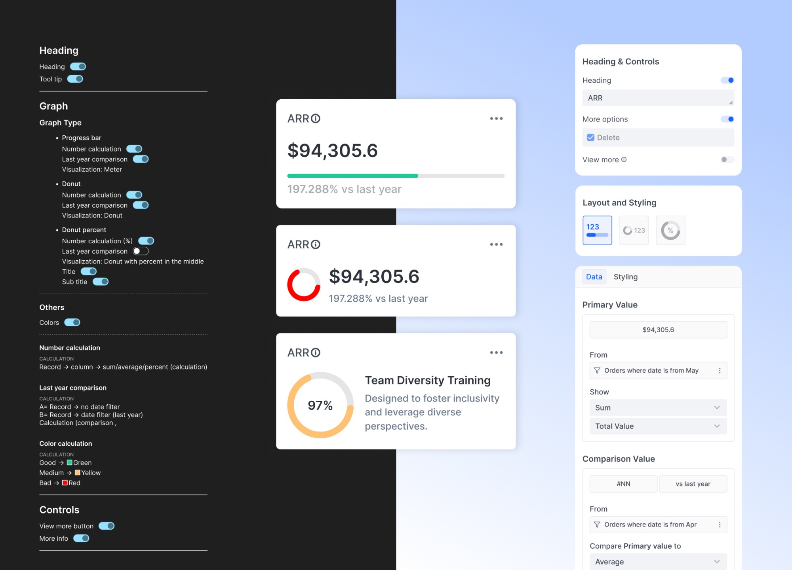

Widget Builder: Turning Clevero’s code-dependent dashboard into a fully customizable one
A self-serve widget system that replaced Clevero’s request-a-developer workflow. Customers use it heavily day to day.
Overview and Contribution
Clevero is an operations platform for service businesses managing complex client workflows. As clients’ needs got more specialized, customizing a dashboard meant asking a developer. I designed a configurable widget system that made it self-serve.
As the sole designer, I worked closely with the PM, who also handled customer support, and partnered with the engineer through implementation.


Problem
Clients still had to rely on a developer just to see their own data
Clevero’s clients span education, health, finance and more. Each one tracks different business metrics, so each one needed a very specific dashboard.
Despite the low-code architecture, the dashboard page had to be built entirely in code (JSON). Clients didn’t want to deal with that, so they went to customer support, who passed the request on to developers.
This resulted in:
- High developer cost
- Lost time and effort
- Client dissatisfaction
- Broken trust in the low-code promise
Solution
A fully customizable dashboard that gives the power back to the user
Visualize: View data and access platform features through a gallery of 16+ widgets
Configure: Create and customize views without touching code
Connect: Pull data straight from the records already in the client’s Clevero system
Impact
Two birds, one stone: happier clients and lower development cost
Customization requests to engineering dropped by 75%.
Clients could now configure their dashboards and create reports themselves, which gave them more control over how they viewed their operational data.
According to the PM, customers used it to put operational tasks in front of staff and create reports to support decisions.
“It’s used heavily by customers now day to day”
Jaemes McArthur, Product Manager, CleveroChallenges & Thought Process
Figuring out the widgets, customization and scalability
What widgets to even create?
The existing dashboard was built on a few widgets users had requested over time. They were outdated in both design and functionality. Clevero had newer features users hadn’t really explored, like assigned chats, and other parts of the platform that would be more convenient if brought forward, like kanban boards.
So I created 16+ widget types, including redesigns of the old ones, in two groups: graphs and others.
Note: I designed the widgets with consistency in mind, since that would make configuration easier later on.


How much customization is too much customization?
On a low-code platform, it’s hard to tell how much customization to give the user. It can be as granular as font weights or as broad as the source of data.
I split customization into three parts: fonts, layouts, and data and filters. Here’s what we allowed, what we didn’t, and why.
Fonts (No)
We could have gone as deep as fonts and font weights, and that’s where I started. But I quickly realized Clevero already lets users change fonts and colors from the main settings. Adding it here was unnecessary and risked inconsistent design across the system.
Layouts (Partial)
Letting users reorder content inside a widget made sense, but it wasn’t necessary for an MVP. The widgets are compact enough that users could get the information at a glance without it.
Reordering and resizing the widgets themselves was worth it, though. Some information needs to be accessed more often or viewed in more depth.
Data & Filter (Yes and No)
The dashboard is for the user, so it had to run on their data. Clevero already held that data, so connecting it was no problem. It was just a matter of which data.
Filtering was the harder part. For the source data, we let users filter directly with Clevero’s existing advanced filtering feature. That got them the right data from the root without much extra effort on our end.
Filtering for specific conditions inside the widget was different. The range of possibilities was more than we could afford for an MVP, but it was still useful to the user. So we compromised: predetermined filter options based on the widget.
Scalability
User needs change over time, and the current set of widgets might not be enough later. Designers change too, and someone new might have to build on top of the existing design. So it had to be scalable.
I created components and an information architecture dedicated to the dashboard, which made it scalable and easy to build on. It took a couple of iterations, but we got there.

Reflection
The widgets were the easy part
Looking back, the hard part wasn’t designing the widgets. It was the decisions around them: what not to let users customize, and how to make the design reusable and modular enough that another designer could add new widgets without worrying about things breaking.